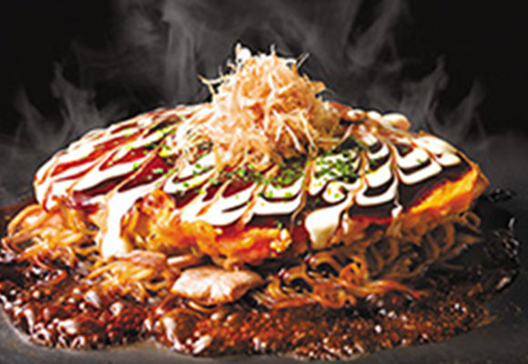

Shinjukupasutakan
Sarabeth’s
東京大人味發見
Day1-2015.07.23
< 新 宿 區>
搭利木津巴士到新宿與朋友會合，因為都還沒吃午飯我說我要吃大阪燒，她說你來東京竟然要吃大阪燒，好吃的大阪燒是在大阪。
店名：Shinjukupasutakan(新宿ぱすたかん)
營業時間：11:00-22:30(L.O.22:00)
住址：東京都新宿區西新宿1-1-3 新宿ミロード 8F
網址：
http://www.towafood-net.co.jp/pasutakan/tabid/82/Default.aspx

back